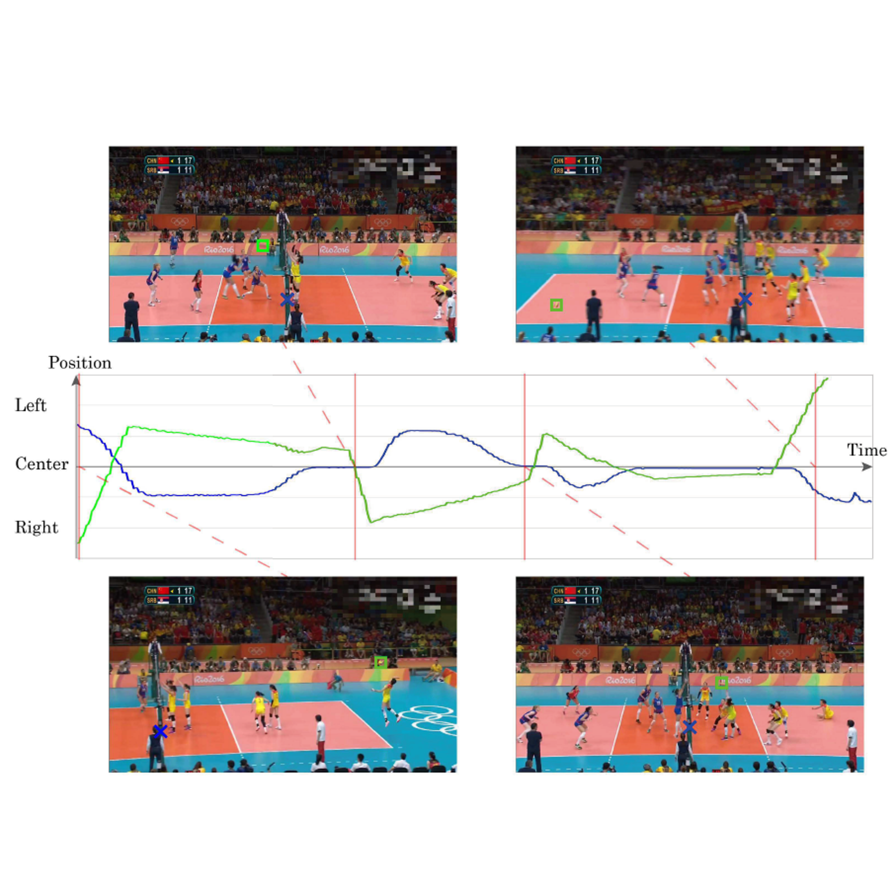

プロフィール

板摺 貴大 / Takahiro Itazuri
| 修士２年 | |
|
早稲田大学 先進理工学研究科 物理学及応用物理学専攻 森島研究室 |
|
| Resume (準備中) | |
| GitHub |
略歴
| 2017.06 | 2017年度未踏IT人材発掘育成プロジェクト クリエータ [link] |
| 2017.03 | 早稲田大学 先進理工学部 物理学科 卒業（学士：理学） |
研究分野
主にコンピュータビジョンに関する研究に興味があります。 特に以下のトピックを中心に取り組んできました：- スポーツ映像処理とその基礎技術
- 深層学習技術に関する基礎的理解
プロジェクト

Visual Object Tracking (Ongoing)
板摺 貴大, 森島 繁生
Movement Sonification for Motor Learning (Ongoing)
板摺 貴大, 福里 司, 森島 繁生2017年度未踏IT人材発掘育成プロジェクト

Self-Supervised Learning for Spatiotemporal 3DCNN Towards Effective Motion Feature
鈴木 智之, 原 健翔, 板摺 貴大, 片岡 裕雄第21回 画像の認識・理解シンポジウム (MIRU 2018) Poster

Understanding Fake Faces
夏目 亮太, 井上 和樹, 福原 吉博, 山本 晋太郎, 片岡 裕雄, 森島 繁生, 板摺 貴大European Conference on Computer Vision Workshop (ECCVW 2018) Poster

Court-based Volleyball Video Summarization Focusing on Rally Scene
板摺 貴大, 福里 司, 山口 周悟, 森島 繁生Computer Vision and Pattern Recognition Workshops (CVPRW 2017)
発表文献
Full Papers
- Takahiro Itazuri, Tsukasa Fukusato, Shugo Yamaguchi, and Shigeo Morishima, "Court-based Volleyball Video Summarization Focusing on Rally Scene", In Proceedings of the 3rd IEEE International Workshop on Computer Vision in Sports (CVSports), pp.123-130, 2017. [DOI]
Posters
- Takahiro Itazuri, Tsukasa Fukusato, Shugo Yamaguchi, and Shigeo Morishima, "Court-Aware Volleyball Video Summarization", ACM SIGGRAPH 2017, No.74, 2017. [DOI]
国内会議（査読あり）
- 板摺 貴大, 福里 司, 山口 周悟, 森島 繁生, "コート情報に基づくバレーボール映像の鑑賞支援", Visual Computing / グラフィックスとCAD合同シンポジウム 2017, No.9, 2017. [link]
国内会議（査読なし）
- 鈴木 智之, 原 健翔, 板摺 貴大, 片岡 裕雄, "Self-Supervised Learning for Spatiotemporal 3DCNN Towards Effective Motion Feature", 第21回 画像の認識・理解シンポジウム (MIRU 2018), PS1-72, 2018. [link]
- 板摺 貴大, 福里 司, 山口 周悟, 森島 繁生, "Court-based Video Summarization and Retrieval Focusing on Rally Scnene in Volleyball Video", 第20回 画像の認識・理解シンポジウム (MIRU 2017), PS2-69, 2017. [link]
- 板摺 貴大, 福里 司, 山口 周悟, 森島 繁生, "コート情報に基づくバレーボール映像の鑑賞支援とラリー解析", 情報処理学会 第79回 全国大会, No.4N-07, 2017. 学生奨励賞
- 板摺 貴大, 福里 司, 山口 周悟, 森島 繁生, "コート情報に基づくバレーボール映像の鑑賞支援と戦術解析への応用の検討", 第205回 コンピュータビジョンとイメージメディア研究発表会, No.37, 2017.
- 板摺 貴大, 福里 司, 山口 周悟, 森島 繁生, "ラリーシーンの自動抽出と解析に基づくバレーボール映像の要約手法の提案", 映像情報メディア学会 冬季大会, No.25C-1, 2016. 学生優秀発表賞 [link]
- 板摺 貴大, 山口 周悟, サフキン パーベル, 中村 優文, 野沢 綸佐, 森島 繁生, "バレーボール映像における鑑賞支援システムの検討", 情報処理学会ビジュアルコンピューティング研究会 ビジュアルコンピューティングワークショップ (VC Workshop), No.6, 2016. [link]
総説・書籍
- 板摺 貴大, 福里 司, 河村 俊哉, 森島 繁生, "ラリーシーンに着目したラケットスポーツ動画鑑賞システム", 日本工業出版 画像ラボ, Vol.28, No.6, pp.12-19, 2017. [link]